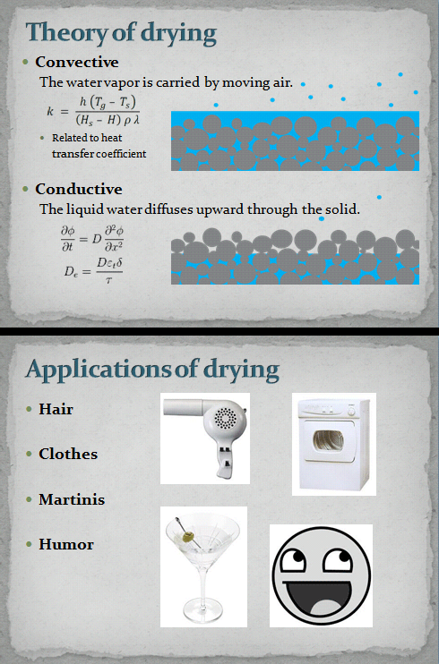

Comic JK 573
When I Feel Like It
⇤
<
?
>
⇥

⇤
<
?
>
⇥
Forum
.
RSS
.
Digg
.
Facebook
.
Reddit
.
Twitter
.
Stumbleupon
Enter your thoughts on number 573 here. Please, no spamming, trolling, phreaking, or dessication. Alcohol? In MY comic? > Maybe the rest of us like the occasional trip to drunkistan. >> With MY reputation? Forgot Ice > And eyes. >>Ice for what? Oh, my Is there Radiative? What kind of drying is it when you wear your wet clothes or put them on a radiator or over a stove to dry them out? >Inefficient >>You're supposed to take your clothes off before putting them on the radiator. >>>In the hottest times of summer, most efficient way to dry clothes is to walk around outside in them. If you hang them up they get stiff. If you dry them in a machine it takes 50 minutes. But it only works for one outfit. What about IN The oven? >Overefficent >>Actually, that's a pretty good idea. Might take some practice to keep the temperature low enough. He mentions humor as an application, but I don’t see anything humorous. (It might have something to do with those equations I don’t understand in the first panel.) Or is putting “humor” on the list supposed to be itself humorous? Because it’s not. >Dry [hair|clothes|martinis|humor]? No? >>Seems the most logical conclusion to me. >>>Ah, so it's _functional_ application. >>>>dry(hair(clothes(martinis(humor)))) Seriously, what the hell is this shit? Dry pussy - as in your mother's.